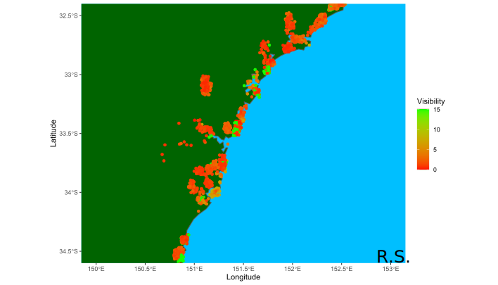

Update 27/12/20
Currently working on utilising the Willy Weather API and Bureau of Meterology historical data to gather predictive data. This will allow forecasts for everyday of the week, and more locations.

Update 30/11/20
A new deep learning model was built within the Keras framework and is currently being tested.

Update 25/11/20
A geospatial plot of visibility was created using my own data alongside data used under CC BY 4.0 from NSW Estuary Water Quality Data Compilation: 2007 - 2020 managed by the NSW Department of Planning, Industry and Environment.

Update 13/11/20
A new model based off of the original was made for specific locations to reduce the prediction interval and is currently being tested.